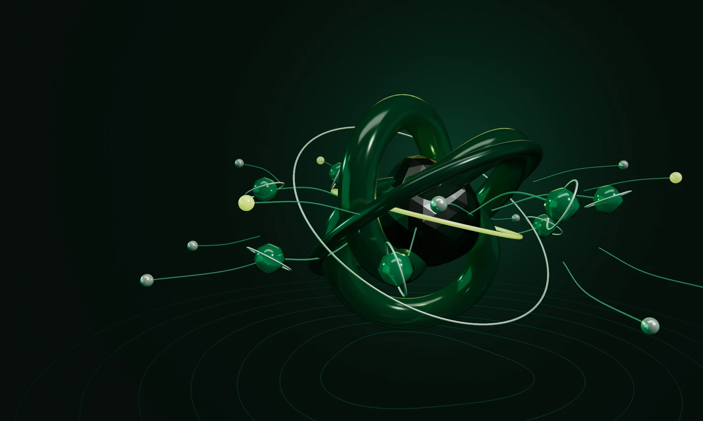
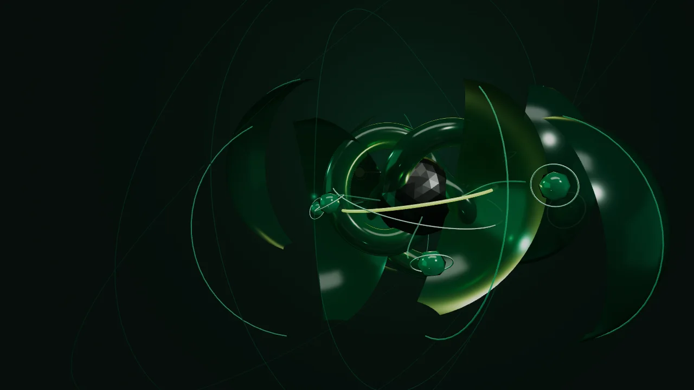
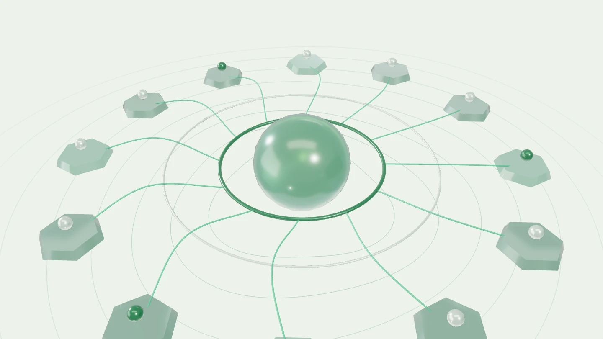
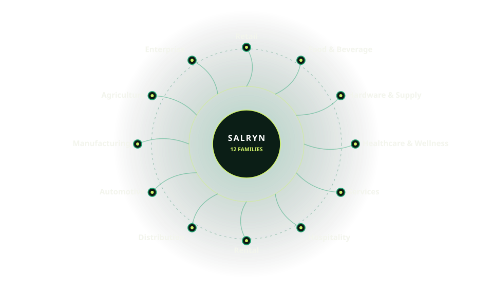
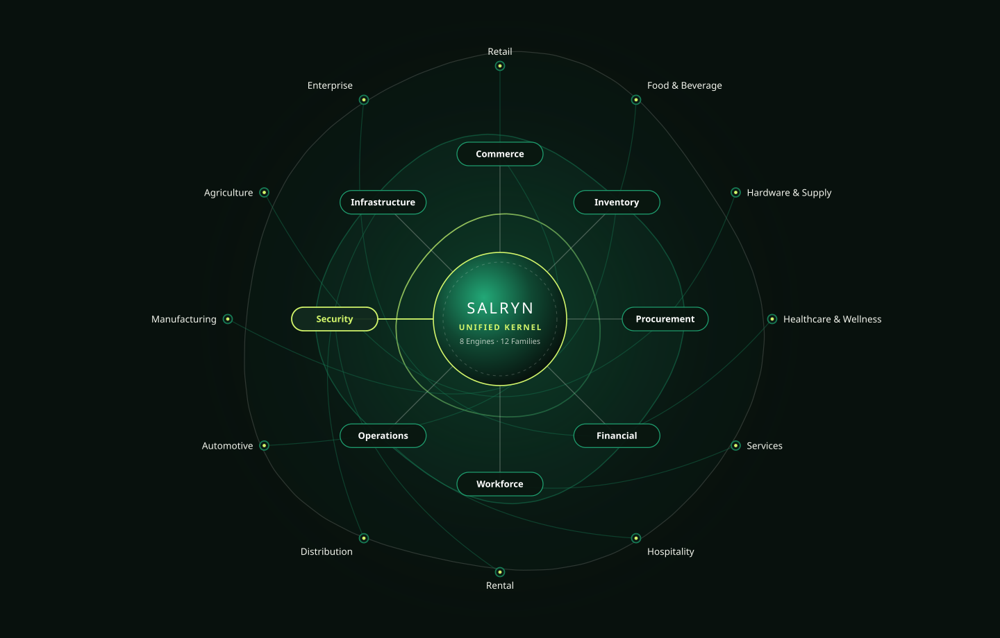
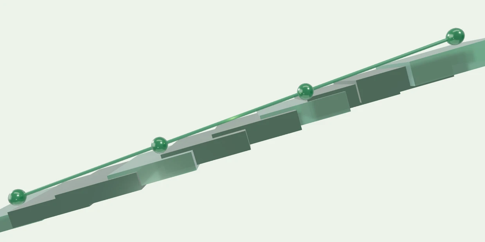
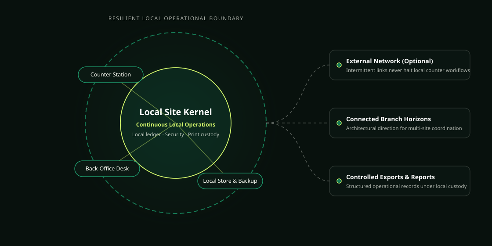

Different operations. One foundation.
Salryn starts with common business operations, then shapes each workspace around its industry.

Salryn
Salryn is Kirjane’s modular business management kernel. Start with a shared foundation and configure it around the work your business does.
SALRYN / THE OPERATING DAY
Open a shift. Make a sale. Trace the stock. Close the books. Scroll through a fictional day in the Salryn interface, step by step.
Skip the film; explore the platform ↓Salryn Cinema follows checkout, inventory, reporting and audit using fictional records.
Continue to the Salryn architecture ↓A shop sells goods, a restaurant routes orders, and a supplier receives stock. Each team works differently. All three need reliable records, clear permissions, and software that reflects how they operate.

Salryn starts with common business operations, then shapes each workspace around its industry.
Each workspace can serve a different team while drawing from the same underlying records.
Sign-in, role permissions, approval limits, and audit records are part of the shared foundation.
The same foundation connects sales, stock, purchasing, finance, staffing, and day-to-day workflows.
A retailer and a manufacturer can use different workflows built on the same core.
Choose an engine to see what it does. Security and Infrastructure are part of every configuration.

Commerce, Inventory, Procurement, Financial, Workforce, Operations, Security, and Infrastructure.
Set access and approval limits and keep an audit record.
A Flavor configures the shared kernel for an industry. Explore twelve possible applications. Availability depends on project scope.


Start with the capabilities your team needs. Entitlements define which modules are available in a configuration, while Security and Infrastructure form the foundation.
Optional capabilities cover Commerce, Inventory, Procurement, Financial, Workforce, and Operations.
Explore the licensing approach with an illustrative configuration.


See how a shop could handle an outage, exchange records, or run more than one workstation.

A shop can record a sale and print a receipt on its local system during an internet outage. Tasks that use external services wait for the connection.
These scenarios illustrate the design. Local availability depends on the equipment, network, and workflows in your deployment.
Choose an industry and the capabilities you want to discuss. The preview builds a summary you can copy or download.
Capabilities to discuss
This local preview prepares a discussion brief. Pricing and availability are determined separately.